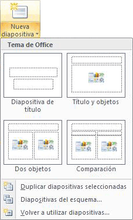
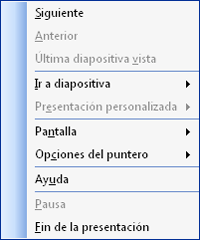
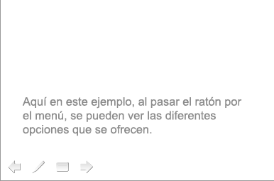
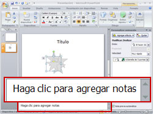

3.6.1 Terminar presentación
Al estar trabajando con una presentación y estar a punto de terminarla, queremos ver cómo va nuestro avance.
Power Point tiene la función de ver cómo quedará nuestra presentación final. Esto se hace a través de las Vistas.
Para utilizar las diferentes vistas se hará lo siguiente:
| 1 | Seleccione de la ficha Ver o del menú inferior la vista que se desea utilizar.
 |
| 2 | Las vistas de Microsoft PowerPoint 2010 que se pueden usar para editar, imprimir y realizar una presentación son las siguientes:
|
Otra forma de ver las diferentes vistas es la siguiente:
Para avanzar, retroceder o salir de la presentación, tiene las siguientes opciones:
| 1 | Para avanzar, retroceder o salir de la presentación, tiene las siguientes opciones:
 |
| 2 | Otra forma, es ir a la parte inferior izquierda de la pantalla, ahí también aparece un menú de acciones que puede realizar durante la presentación.
 |
Otra función importante para quien hace muchas presentaciones y las presenta en público, es ir agregando notas a la presentación.
Para hacerlo, realice los siguientes pasos:
| 1 | Localice en la parte inferior el espacio para agregar notas.
 |
| 2 | Posicione el cursor sobre el texto. Haga clic para agregar notas. |
| 3 | Escriba el mensaje de la nota. |
Las notas se agregan en las diapositivas que usted seleccione. Para volver a ver las notas, basta con abrir la presentación e ir a la diapositiva donde escribió los textos. En el mismo espacio de las notas encontrará la información.
Estas notas las puede ver usted en la pantalla, o también tiene opción de imprimirlas.